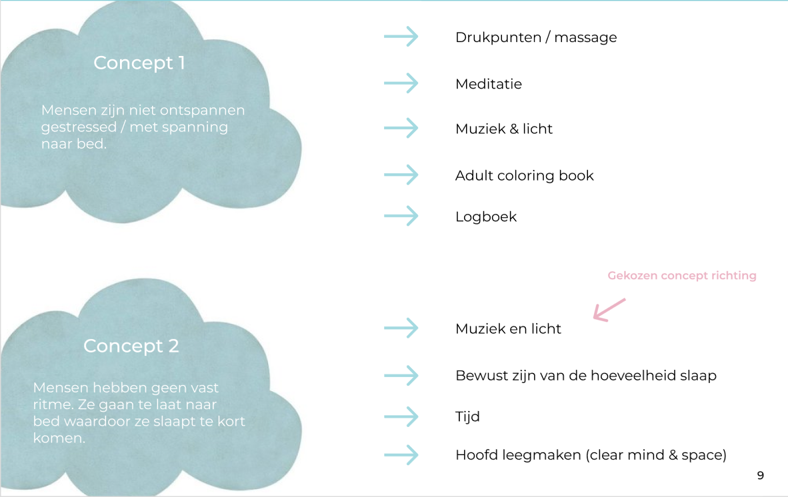
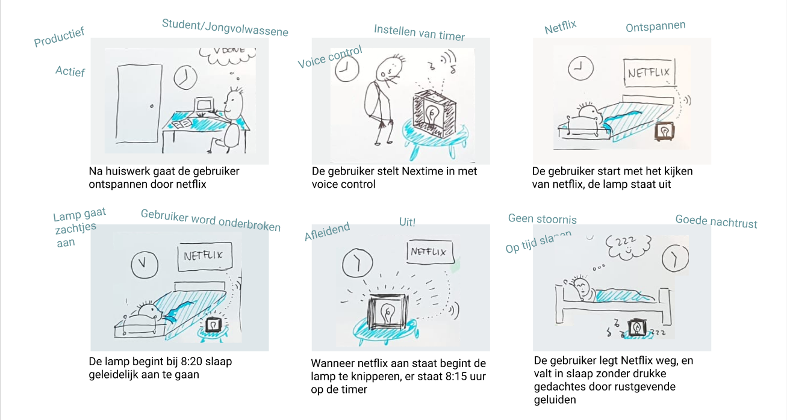
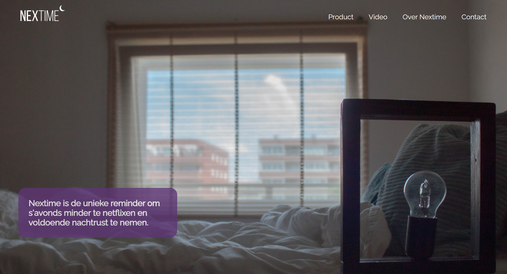
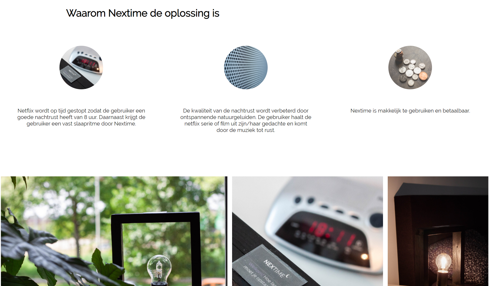

Project Slaap
In het eerste jaar van mijn studie Communication & Mulitmedia Design kregen wij als studenten de opdracht om een interactief product te ontwerpen. Het doel van het project was om een product te maken waardoor de gebruiker makkelijker en fijner in slaap valt en dat de kwaliteit van de slaap beter is. Hierbij heb ik meer geleerd over het maken van een fysiek product in het makerslab en ben ik aan de slag gegaan met de website.
Het proces
Om een interactief product te bedenken wat de gebruiker helpt om makkelijker in slaap te komen moest ik me specificeren tot een doelgroep waar ik het probleem voor wil oplossen. Ik heb er voor gekozen om me te richten op studenten tussen de 20 en 24 jaar. Uit mijn onderzoek is namelijk gebleken dat deze studenten veel netflix kijken voor het slapengaan en daarom moeite hebben om in slaap te komen wat voor een verstoord slaapritme zorgt.
Ik heb na het specificeren van een doelgroep onderzoek gedaan naar mogelijke features die kunnen helpen met het beter in slaap komen. Dit onderzoek heb ik samen met mijn groepje gedaan om tot een concept te komen. We hebben hier de keuze gemaakt om voor het tweede concept te kiezen.

Het product dat wij als groepje hebben ontwikkeld is een lamp die de gebruiker helpt herinneren om op tijd te gaan slapen wanneer hij/zij nog Netflix aan het kijken is via televisie of laptop. De gebruiker geeft door middel van voice control aan hoe laat hij/zij de volgende dag gewekt moet worden. Hierdoor kan de lamp het aantal uur slaap berekenen. Na het instellen staat de lamp uit. Mijn doelgroep kijkt voor het slapen gaan Netflix in bed. Op het moment dat de gebruiker nog 8 uur en 20 minuten slaap op de teller heeft staan begint de lamp langzaam op te lichten. Na 10 minuten brandt de lamp van Nextime volledig en checkt de lamp door middel van de geluidssensor of Netflix nog aan staat. Is Netflix nog aan? Dan begint de lamp te knipperen (geleidelijk oplichten en dimmen). Is Netflix uit? Dan gaat de lamp helemaal uit.

Om de gebruiker tot rust te laten komen en de gedachtes over Netflix weg te halen, wordt er natuur geluid uit de lamp afgespeeld tot 8 resterende
hoeveelheid slaapuren. Hierdoor komt de gebruiker aan een nachtrust van 8 uur slaap en bouwt de hij/zij een vast slaapritme op.
Voor de presentatie van het concept ben ik ook verantwoordelijk geweest voor de visuele weergave van het concept op de website. We hebben als groepje gezamelijk de content bepaald waarbij ik dit op een website heb gezet. De website voor het concept ziet er als volgt uit:

